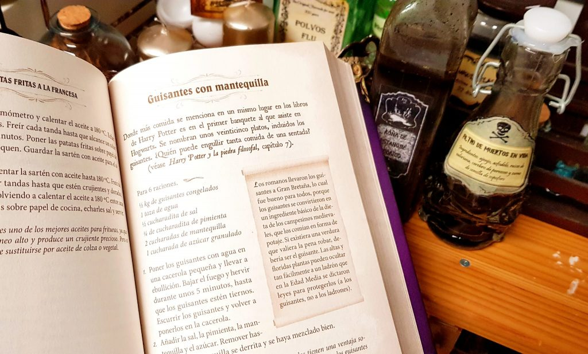

The Unofficial Harry Potter Cookbook es un libro de cocina al que la gente puede recurrir para preparar comidas y cocinas brillantes para disfrutar en casa. Hay más de 150 recetas especiales proporcionadas dentro del libro, que sigue el tema de Harry Potter y tiene como objetivo brindarles a los fanáticos de Harry Potter una guía fácil para hacer esos alimentos mágicos, como una taza de té, pasteles de roca, jugo de calabaza, pasteles de caldero, etc. ¡Todos estos platos pueden hacerte sentir como si estuvieras viviendo en Hogwarts!

¿Quieres preparar comidas de Harry Potter para disfrutar durante una fiesta? ¡Es por eso que traemos estas recetas a todos los fanáticos de Harry Potter! En el artículo publicado las personas pueden aprender a preparar más de 50 comidas diferentes de Harry Potter con tutoriales fáciles de entender. Puedes traer diferentes postres y bebidas a tu mesa para disfrutar con tus hijos juntos!
Las empanadas de calabaza son una delicia favorita de Harry Potter, que encontró por primera vez a bordo del Expreso de Hogwarts en su camino a la escuela por primera vez.
Ir a la recetaCrear ranas de chocolate de Harry Potter es fácil y divertido. Esta es una de nuestras recetas favoritas. Perfecto para fiestas o cualquier ocasión festiva.
Ir a la recetaEl pastel de Navidad es un tipo de pastel de frutas que se sirve en Gran Bretaña en Navidad.
Ir a la recetaEl delicioso zumo es el más popular entre los estudiantes de Hogwarts, que lo beben en cualquier ocasión. Fabricado desde 1837 por London Pumpkins & Sons, su consumo está tan extendido como el zumo de naranja en el mundo muggle.
Ir a la recetaLa cerveza de mantequilla se sirve fría en botellas y caliente en jarras espumeantes. En Hogsmeade, se vende en Las Tres Escobas y en Cabeza de Puerco.
Ir a la recetaEmpanada en forma de media luna de pasta espesa, tradicionalmente rellena de una mezcla de carne de ternera, nabo, cebolla y patata.
Ir a la recetaLa naranja es una fruta que cuenta con un rico sabor y de él se desprenden una serie de vitaminas y minerales importantes y necesarios para el organismo.
Ir a la recetaLa galleta de jengibre es un tipo de galleta vendida en el mundo mágico, viene de varias formas.
Ir a la receta